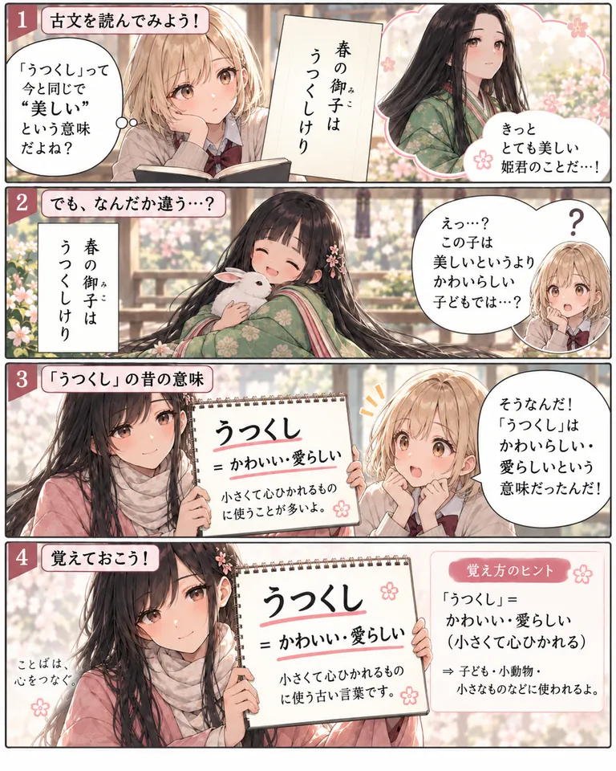
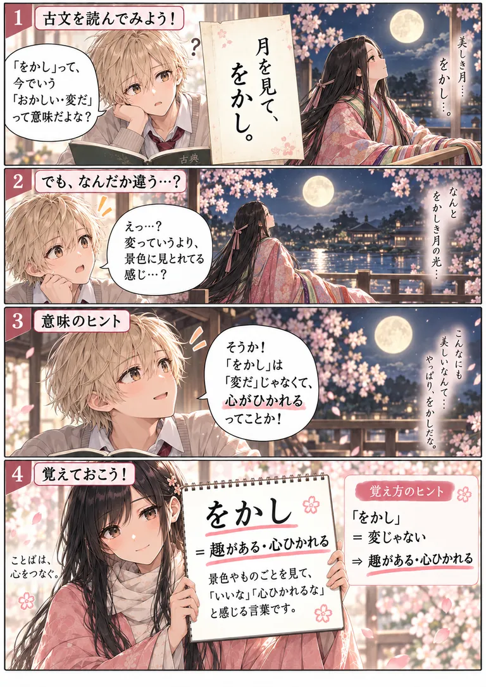
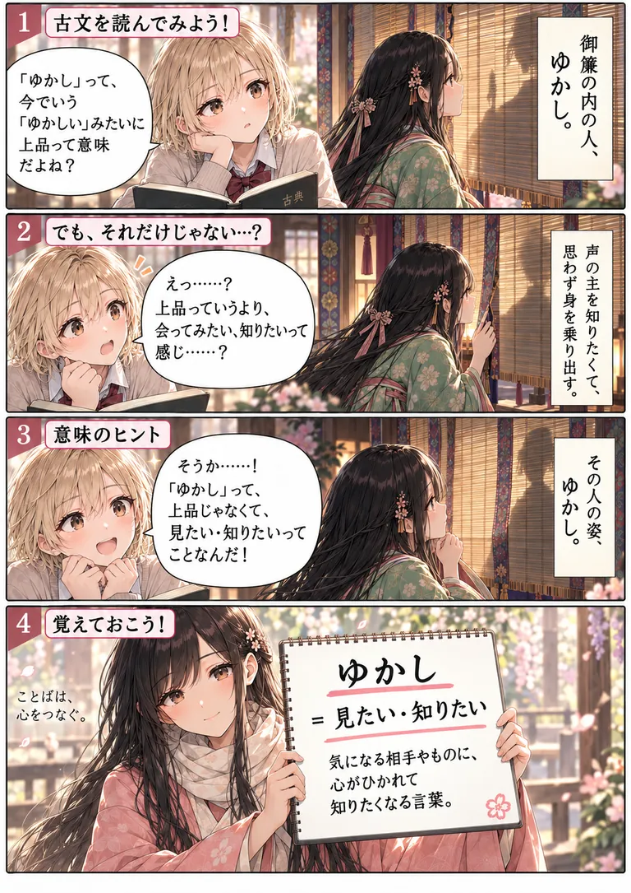
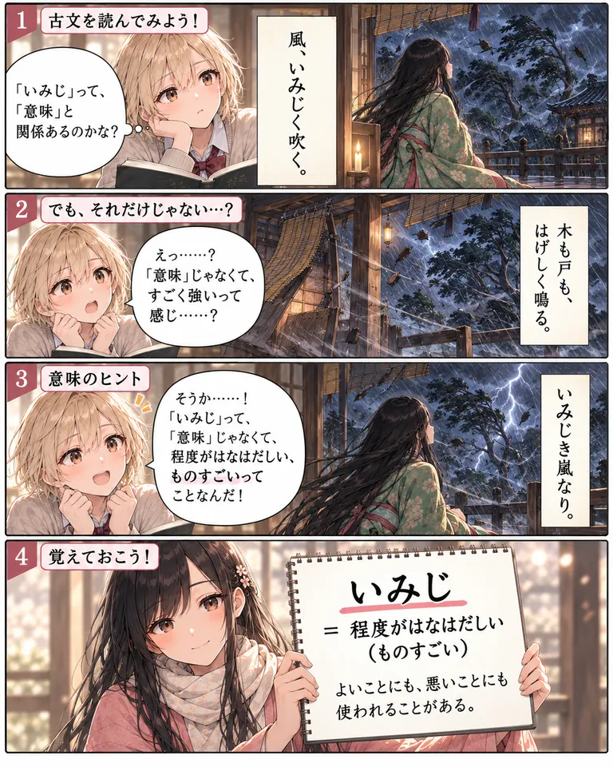
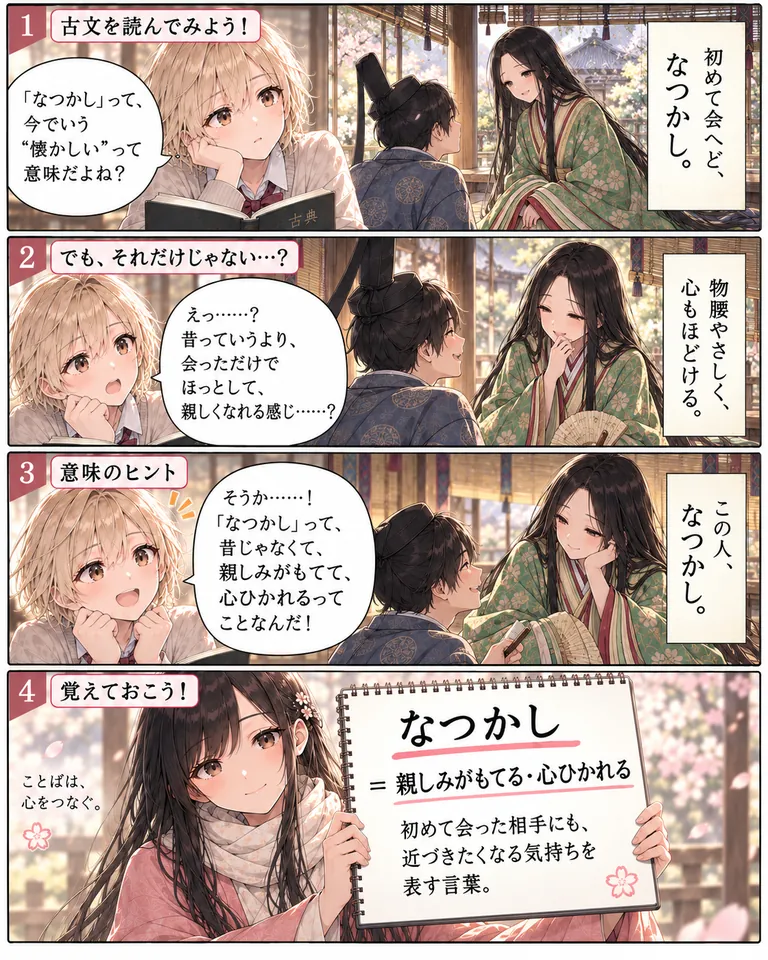
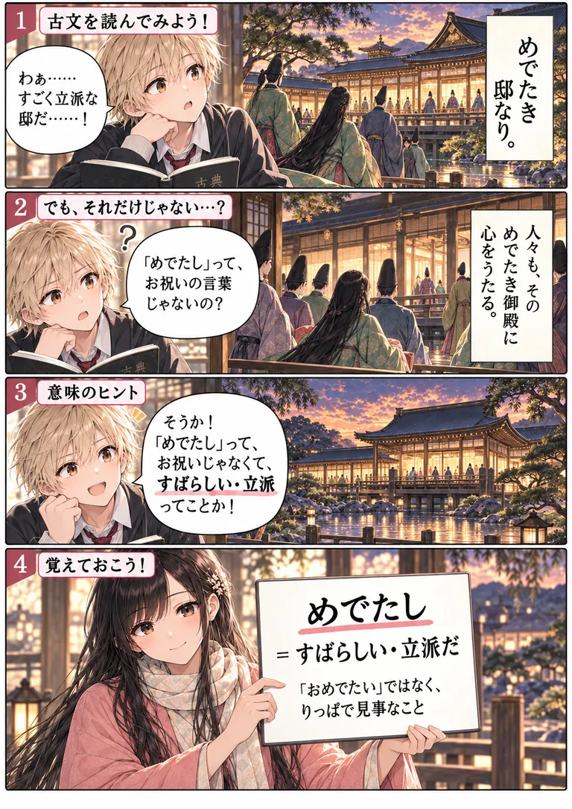
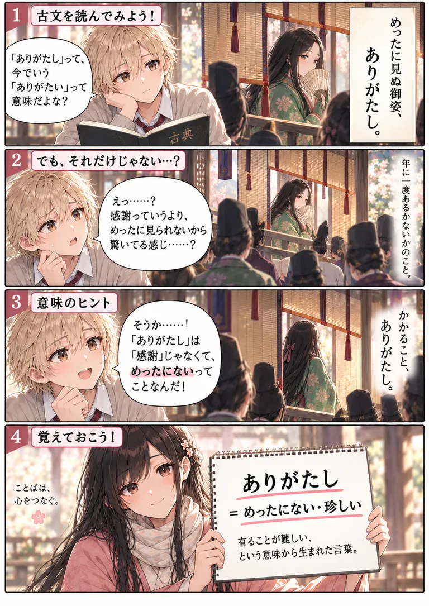
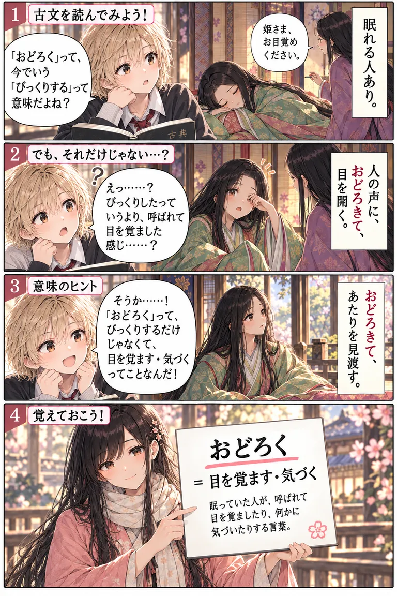

古文の単語には、今使っている言葉とよく似ていて、意味が違うものがたくさんあります。このページでは、そんな古文単語のうち8語を、4コマ漫画で紹介します。
漫画で場面をつかんでから、古文単語クイズで確認すると、意味が記憶に残りやすくなります。掲載する語は、順次増やしていく予定です。
うつくしかわいい・愛らしい

うつくし＝かわいい・愛らしい
漫画の内容を文章で読む
- 現代の生徒が、「うつくし」は今と同じ「美しい」の意味だと思い込み、古文の「春の御子はうつくしけり」を読んで、きっと美しい姫君のことだと想像する。
- 古文の場面では、姫君が白い兎を抱いて、うれしそうに笑っている。生徒は「美しいというより、かわいらしい子どもでは？」と気づく。
- 先生が「うつくし＝かわいい・愛らしい。小さくて心ひかれるものに使うことが多い」と示す。
- 「うつくし＝かわいい・愛らしい」。小さくて心ひかれるものに使う古い言葉。
現代語の「美しい」と混同しやすい言葉ですが、古文では「かわいい・愛らしい」という意味です。小さなものや幼いものを、かわいらしいと感じる気持ちを表します。
UNIT 10「逆転語」に挑戦する →
をかし趣がある・心ひかれる

をかし＝趣がある・心ひかれる
漫画の内容を文章で読む
- 生徒が、「をかし」は今の「おかしい（変だ）」の意味だと思う。古文の場面では、月を見上げる平安の女性が「月を見て、をかし。」と言う。
- 生徒は「変っていうより、景色に見とれてる感じ？」と気づく。
- 「『をかし』は『変だ』じゃなくて、心がひかれるってことか！」と理解する。
- 「をかし＝趣がある・心ひかれる」。景色やものごとを見て、「いいな」「心ひかれるな」と感じる言葉。
現代語の「おかしい」と混同しやすい言葉ですが、古文では「趣がある・心ひかれる」という意味です。月や雪の景色など、心が動くものの魅力を表します。
UNIT 10「逆転語」に挑戦する →
ゆかし見たい・知りたい

ゆかし＝見たい・知りたい
漫画の内容を文章で読む
- 生徒が、「ゆかし」は今の「ゆかしい」のように上品という意味だと思う。古文の場面では、御簾の内の人に気づいた姫君が「ゆかし」と心ひかれている。
- 生徒は「上品というより、会ってみたい、知りたいって感じ？」と気づく。姫君は声の主を知りたくて、思わず身を乗り出す。
- 「『ゆかし』って、上品じゃなくて、見たい・知りたいってことなんだ！」と理解する。
- 「ゆかし＝見たい・知りたい」。気になる相手やものに、心がひかれて知りたくなる言葉。
現代語の「ゆかしい」と混同しやすい言葉ですが、古文では「見たい・知りたい」という意味です。気になる相手やものに心がひかれて、知りたくなる気持ちを表します。
UNIT 10「逆転語」に挑戦する →
いみじ程度がはなはだしい（ものすごい）

いみじ＝程度がはなはだしい（ものすごい）
漫画の内容を文章で読む
- 生徒が、「いみじ」は「意味」と関係があるのかな、と考える。古文の場面では、嵐の中で「風、いみじく吹く。」と語られる。
- 木も戸もはげしく鳴る様子を見て、生徒は「『意味』じゃなくて、すごく強いって感じ？」と気づく。
- 「『いみじ』は、程度がはなはだしい、ものすごいってことなんだ！」と理解する。
- 「いみじ＝程度がはなはだしい（ものすごい）」。よいことにも、悪いことにも使われることがある。
「いみじ」は、古文では「程度がはなはだしい（ものすごい）」という意味です。よいことにも悪いことにも使い、程度の大きさを表します。
UNIT 10「逆転語」に挑戦する →
なつかし親しみがもてる・心ひかれる

なつかし＝親しみがもてる・心ひかれる
漫画の内容を文章で読む
- 生徒が、「なつかし」は今の「懐かしい」の意味だと思う。古文の場面では、初めて会った男女が向き合い、「初めて会へど、なつかし。」と語られる。
- 物腰がやさしく、心もほどける様子を見て、生徒は「昔っていうより、会っただけでほっとして、親しくなれる感じ？」と気づく。
- 「『なつかし』は、昔じゃなくて、親しみがもてて、心ひかれるってことなんだ！」と理解する。
- 「なつかし＝親しみがもてる・心ひかれる」。初めて会った相手にも、近づきたくなる気持ちを表す言葉。
現代語の「懐かしい」と混同しやすい言葉ですが、古文では「親しみがもてる・心ひかれる」という意味です。初めて会った相手にも、近づきたくなる気持ちを表します。
古文単語クイズ 250問を見る →
めでたしすばらしい・立派だ

めでたし＝すばらしい・立派だ
漫画の内容を文章で読む
- 生徒が、立派な邸を見て「すごく立派な邸だ」と感心する。古文の場面では、「めでたき邸なり。」と語られる。
- 生徒は「『めでたし』って、お祝いの言葉じゃないの？」と疑問に思う。人々がその立派な御殿に心を打たれている様子が描かれる。
- 「『めでたし』って、お祝いじゃなくて、すばらしい・立派ってことか！」と理解する。
- 「めでたし＝すばらしい・立派だ」。「おめでたい」ではなく、りっぱで見事なことを表す。
現代語の「おめでたい」と混同しやすい言葉ですが、古文では「すばらしい・立派だ」という意味です。祝い事ではなく、りっぱで見事なことを表します。
UNIT 10「逆転語」に挑戦する →
ありがたしめったにない・珍しい

ありがたし＝めったにない・珍しい
漫画の内容を文章で読む
- 生徒が、「ありがたし」は今の「ありがたい」の意味だと思う。古文の場面では、「めったに見ぬ御姿、ありがたし。」と語られる。
- 生徒は「感謝っていうより、めったに見られないという感じでは？」と気づく。「年に一度あるかないかのこと」と語られる。
- 「『ありがたし』は『感謝』じゃなくて、めったにないってことなんだ！」と理解する。
- 「ありがたし＝めったにない・珍しい」。「有ることが難しい」という意味から生まれた言葉。
現代語の「ありがたい」と混同しやすい言葉ですが、古文では「めったにない・珍しい」という意味です。「有ることが難しい」という意味から生まれた言葉です。
UNIT 10「逆転語」に挑戦する →
おどろく目を覚ます・はっと気づく

おどろく＝目を覚ます・はっと気づく
漫画の内容を文章で読む
- 生徒が、「おどろく」は今の「びっくりする」の意味だと思う。古文の場面では、眠っている姫君に「姫さま、お目覚めください。」と呼びかける声がする。
- 「人の声に、おどろきて、目を開く。」姫君が目を覚ます様子を見て、生徒は「びっくりしたっていうより、呼ばれて目を覚ました感じ？」と気づく。
- 「『おどろく』って、びっくりするだけじゃなくて、目を覚ます・気づくってことなんだ！」と理解する。姫君は目を覚まして、あたりを見渡す。
- 「おどろく＝目を覚ます・気づく」。眠っていた人が、呼ばれて目を覚ましたり、何かに気づいたりする言葉。
現代語の「びっくりする」と混同しやすい言葉ですが、古文では「目を覚ます・はっと気づく」という意味です。眠っていた人が目を覚ましたり、何かに気づいたりするときに使います。
UNIT 10「逆転語」に挑戦する →